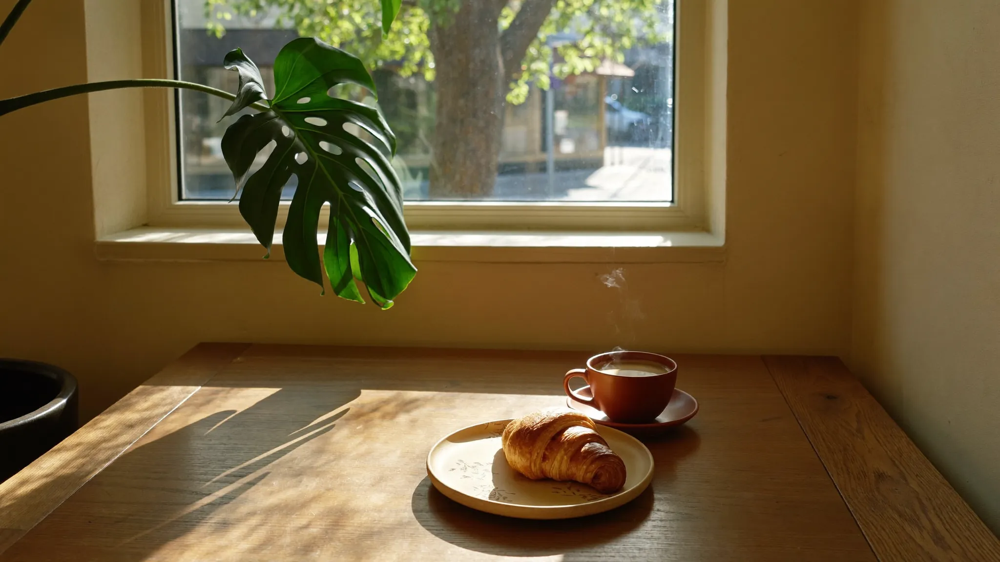
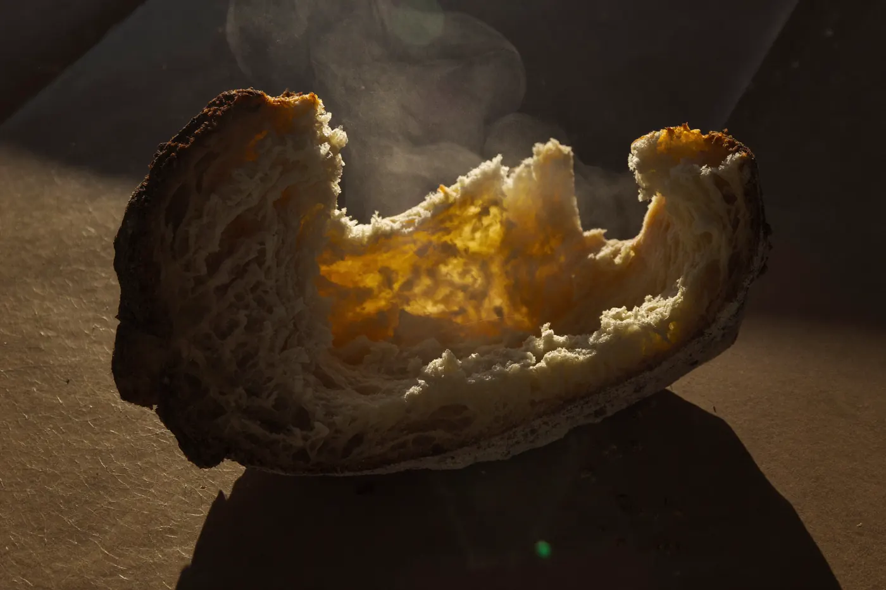
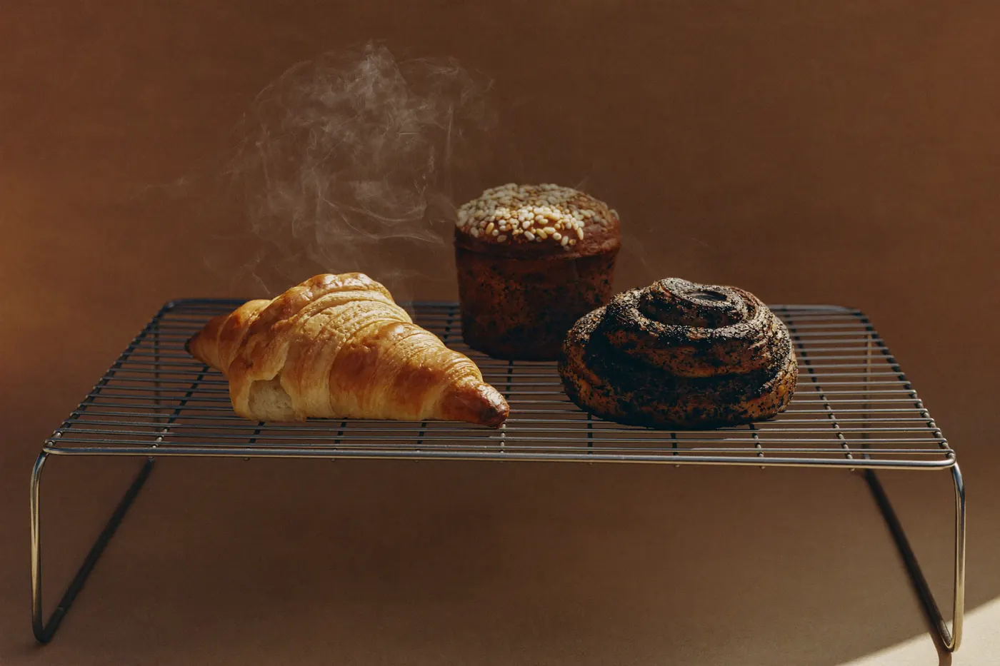
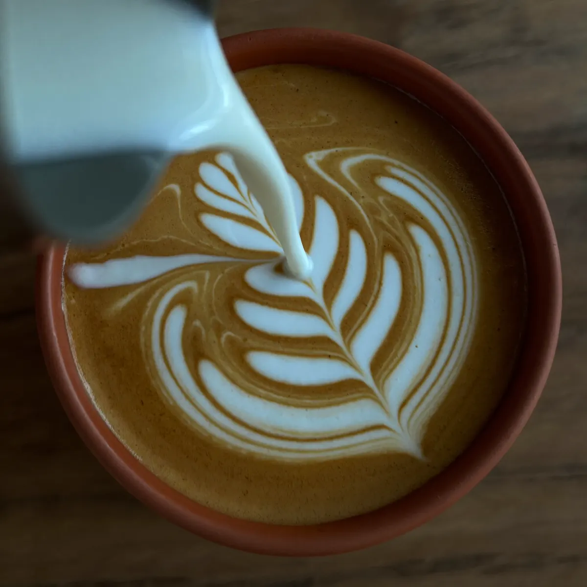
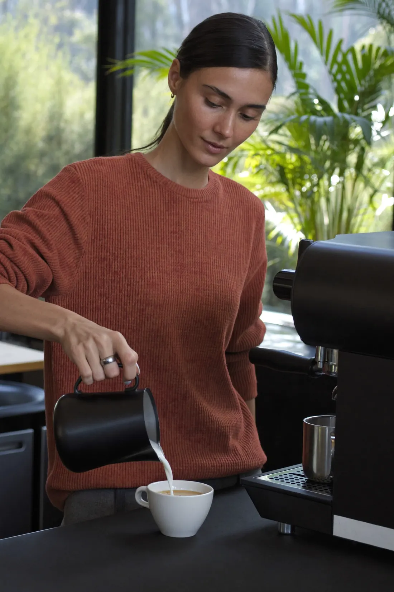

A corner room, a hot oven, and the morning let in.

The morning bake
The dough goes to bed before we do. By the time the corner gets its sun, the first loaves are out and the lamination is blistered and singing. What you smell from the door is the schedule below, kept daily.



The pour
Our mark is the rosette — the same one the milk draws when the pour is patient and the crema is fresh. If it comes out a little different every time, that's the point. Beans from small roasters, rotated monthly; milk from one dairy we can name if you ask.
The room
The corner gets its light at eight and keeps it till close. Plants inside, a tree outside, and the kind of table you stay at longer than you meant to. Bring someone, or bring the paper — both count as company here.
The board

The keeper
Small room, small crew, one machine we keep spotless. We learn your order by the second visit and your name by the third — no loyalty card required, that's just what corners are for.
The first pour's at seven.